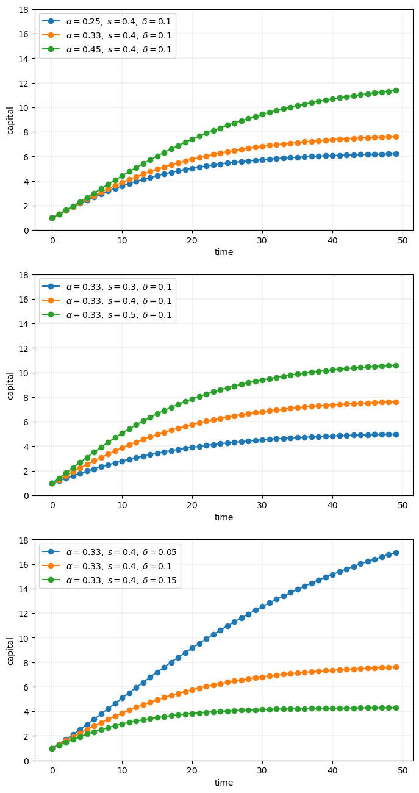
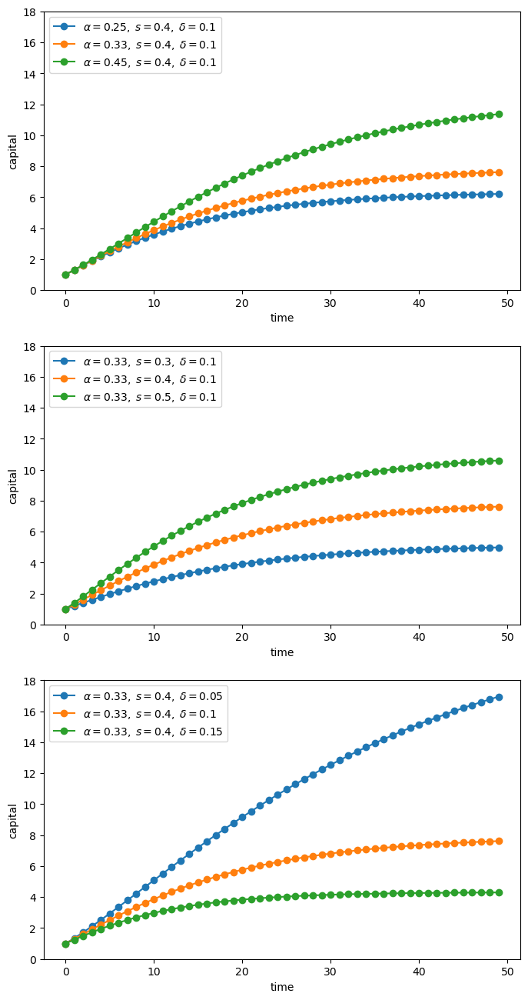
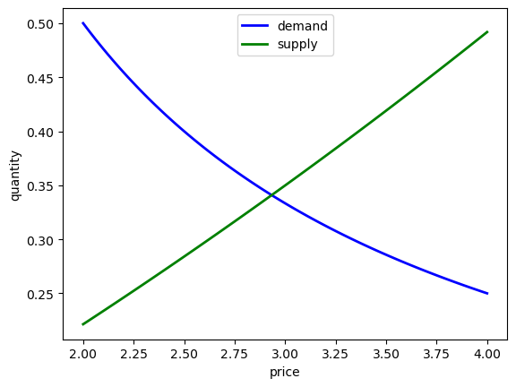
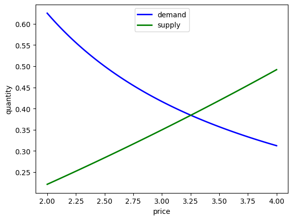

18. نوشتن کد خوب#
“هر احمقی میتواند کدی بنویسد که کامپیوتر بتواند درک کند. برنامهنویسان خوب کدی مینویسند که انسانها بتوانند درک کنند.” – مارتین فاولر
18.1. مرور کلی#
وقتی برنامههای کامپیوتری کوچک هستند، کد بد نوشته شده خیلی پرهزینه نیست.
اما دادههای بیشتر، مدلهای پیچیدهتر و قدرت محاسباتی بیشتر ما را قادر میسازد تا مسائل چالشبرانگیزتری را که شامل نوشتن برنامههای طولانیتر هستند، در پیش بگیریم.
برای چنین برنامههایی، سرمایهگذاری در شیوههای کدنویسی خوب بازدهی بالایی خواهد داشت.
بازدههای اصلی، بهرهوری بالاتر و کد سریعتر هستند.
در این سخنرانی، برخی از عناصر شیوههای کدنویسی خوب را بررسی میکنیم.
همچنین به تحولات مدرن در محاسبات علمی — مانند کامپایل به موقع — و چگونگی تأثیر آنها بر طراحی خوب برنامه اشاره میکنیم.
18.2. نمونهای از کد ضعیف#
بیایید نگاهی به کد بدی که نوشته شده است بیندازیم.
کار این کد تولید و رسم سریهای زمانی مدل سادهشده سولو است
در اینجا
\(k_t\) سرمایه در زمان \(t\) است و
\(s, \alpha, \delta\) پارامترها هستند (پسانداز، یک پارامتر بهرهوری و استهلاک)
برای هر پارامتربندی، کد
\(k_0 = 1\) را تنظیم میکند
با استفاده از (18.1) برای تولید دنباله \(k_0, k_1, k_2 \ldots , k_T\) تکرار میکند
دنباله را رسم میکند
نمودارها در سه زیرشکل گروهبندی خواهند شد.
در هر زیرشکل، دو پارامتر ثابت نگه داشته میشوند در حالی که پارامتر دیگر تغییر میکند
import numpy as np
import matplotlib.pyplot as plt
# Allocate memory for time series
k = np.empty(50)
fig, axes = plt.subplots(3, 1, figsize=(8, 16))
# Trajectories with different α
δ = 0.1
s = 0.4
α = (0.25, 0.33, 0.45)
for j in range(3):
k[0] = 1
for t in range(49):
k[t+1] = s * k[t]**α[j] + (1 - δ) * k[t]
axes[0].plot(k, 'o-', label=rf"$\alpha = {α[j]},\; s = {s},\; \delta={δ}$")
axes[0].grid(lw=0.2)
axes[0].set_ylim(0, 18)
axes[0].set_xlabel('time')
axes[0].set_ylabel('capital')
axes[0].legend(loc='upper left', frameon=True)
# Trajectories with different s
δ = 0.1
α = 0.33
s = (0.3, 0.4, 0.5)
for j in range(3):
k[0] = 1
for t in range(49):
k[t+1] = s[j] * k[t]**α + (1 - δ) * k[t]
axes[1].plot(k, 'o-', label=rf"$\alpha = {α},\; s = {s[j]},\; \delta={δ}$")
axes[1].grid(lw=0.2)
axes[1].set_xlabel('time')
axes[1].set_ylabel('capital')
axes[1].set_ylim(0, 18)
axes[1].legend(loc='upper left', frameon=True)
# Trajectories with different δ
δ = (0.05, 0.1, 0.15)
α = 0.33
s = 0.4
for j in range(3):
k[0] = 1
for t in range(49):
k[t+1] = s * k[t]**α + (1 - δ[j]) * k[t]
axes[2].plot(k, 'o-', label=rf"$\alpha = {α},\; s = {s},\; \delta={δ[j]}$")
axes[2].set_ylim(0, 18)
axes[2].set_xlabel('time')
axes[2].set_ylabel('capital')
axes[2].grid(lw=0.2)
axes[2].legend(loc='upper left', frameon=True)
plt.show()

درست است، این کد کم و بیش از PEP8 پیروی میکند.
در عین حال، ساختار آن بسیار ضعیف است.
بیایید در مورد اینکه چرا چنین است صحبت کنیم، و در مورد آنچه میتوانیم انجام دهیم.
18.3. شیوههای کدنویسی خوب#
معمولاً راههای مختلفی برای نوشتن برنامهای که یک وظیفه معین را انجام میدهد وجود دارد.
برای برنامههای کوچک، مانند برنامه بالا، نحوه نوشتن کد چندان مهم نیست.
اما اگر شما جاهطلب هستید و میخواهید چیزهای مفیدی تولید کنید، برنامههای متوسط تا بزرگ نیز خواهید نوشت.
در آن تنظیمات، سبک کدنویسی بسیار مهم است.
خوشبختانه، افراد باهوش زیادی در مورد بهترین راه برای نوشتن کد فکر کردهاند.
در اینجا برخی از اصول اولیه آورده شده است.
18.3.1. از اعداد جادویی استفاده نکنید#
اگر به کد بالا نگاه کنید، اعدادی مانند 50 و 49 و 3 را در سرتاسر کد پراکنده خواهید دید.
این نوع مقادیر عددی در بدنه کد شما گاهی اوقات “اعداد جادویی” نامیده میشوند.
این یک تعریف نیست.
در حالی که تمام مقادیر عددی بد نیستند، اعدادی که در برنامه بالا نشان داده شدهاند مطمئناً باید با ثابتهای نامگذاری شده جایگزین شوند.
به عنوان مثال، کد بالا میتواند متغیر time_series_length = 50 را اعلام کند.
سپس در حلقهها، 49 باید با time_series_length - 1 جایگزین شود.
مزایا اینها هستند:
معنی در سرتاسر کد بسیار واضحتر است
برای تغییر طول سری زمانی، شما فقط نیاز به تغییر یک مقدار دارید
18.3.2. خودتان را تکرار نکنید#
گناه کبیره دیگر در قطعه کد بالا تکرار است.
بلوکهای منطقی (مانند حلقه برای تولید سری زمانی) با تغییرات جزئی تکرار میشوند.
این یک اصل بنیادی برنامهنویسی را نقض میکند: خودتان را تکرار نکنید (DRY).
همچنین DIE (تکرار شر است) نامیده میشود.
بله، ما میدانیم که شما میتوانید فقط کپی و پیست کنید و چند نماد را تغییر دهید.
اما به عنوان یک برنامهنویس، هدف شما باید خودکارسازی تکرار باشد، نه انجام آن توسط خودتان.
مهمتر از آن، تکرار منطق یکسان در مکانهای مختلف به این معنی است که در نهایت یکی از آنها احتمالاً اشتباه خواهد بود.
اگر میخواهید بیشتر بدانید، خلاصه عالی موجود در این صفحه را بخوانید.
ما در مورد چگونگی اجتناب از تکرار در زیر صحبت خواهیم کرد.
18.3.3. متغیرهای سراسری را به حداقل برسانید#
مطمئناً، متغیرهای سراسری (یعنی نامهایی که به مقادیر خارج از هر تابع یا کلاس اختصاص داده شدهاند) راحت هستند.
برنامهنویسان مبتدی معمولاً از متغیرهای سراسری بیپروا استفاده میکنند — همانطور که ما یک زمانی چنین میکردیم.
اما متغیرهای سراسری خطرناک هستند، به خصوص در برنامههای متوسط تا بزرگ، زیرا
آنها میتوانند بر آنچه در هر بخشی از برنامه شما اتفاق میافتد تأثیر بگذارند
آنها میتوانند توسط هر تابع تغییر کنند
این کار اطمینان از آنچه بخش کوچکی از یک قطعه کد خاص واقعاً دستور میدهد را بسیار سختتر میکند.
در اینجا یک بحث مفید در مورد این موضوع وجود دارد.
در حالی که متغیر سراسری فردی در اسکریپتهای کوچک مشکل بزرگی نیست، ما توصیه میکنیم که به خود یاد دهید از آنها اجتناب کنید.
(ما در مورد چگونگی این کار در زیر بحث خواهیم کرد).
18.3.3.1. کامپایل JIT#
برای محاسبات علمی، دلیل خوب دیگری برای اجتناب از متغیرهای سراسری وجود دارد.
همانطور که در سخنرانیهای قبلی دیدیم، کامپایل JIT میتواند عملکرد عالی برای زبانهای اسکریپتی مانند Python ایجاد کند.
اما کار کامپایلری که برای کامپایل JIT استفاده میشود زمانی که متغیرهای سراسری وجود دارند سختتر میشود.
به عبارت دیگر، استنتاج نوع مورد نیاز برای کامپایل JIT زمانی امنتر و مؤثرتر است که متغیرها در داخل یک تابع ایزوله شوند.
18.3.4. از توابع یا کلاسها استفاده کنید#
خوشبختانه، ما به راحتی میتوانیم از شرارتهای متغیرهای سراسری و کد WET اجتناب کنیم.
WET مخفف “we enjoy typing” است و مخالف DRY است.
ما میتوانیم این کار را با استفاده مکرر از توابع یا کلاسها انجام دهیم.
در واقع، توابع و کلاسها به طور خاص برای کمک به ما برای جلوگیری از شرمساری خود با تکرار کد یا استفاده بیش از حد از متغیرهای سراسری طراحی شدهاند.
18.3.4.1. کدام یک، توابع یا کلاسها؟#
هر دو میتوانند مفید باشند، و در واقع آنها به خوبی با یکدیگر کار میکنند.
ما با گذشت زمان بیشتر در مورد این موضوعات خواهیم آموخت.
(ترجیح شخصی نیز بخشی از موضوع است)
آنچه واقعاً مهم است این است که شما از یکی یا دیگری یا هر دو استفاده کنید.
18.4. بازبینی مثال#
در اینجا کدی است که نمودار بالا را با سبک کدنویسی بهتر بازتولید میکند.
from itertools import product
def plot_path(ax, αs, s_vals, δs, time_series_length=50):
"""
Add a time series plot to the axes ax for all given parameters.
"""
k = np.empty(time_series_length)
for (α, s, δ) in product(αs, s_vals, δs):
k[0] = 1
for t in range(time_series_length-1):
k[t+1] = s * k[t]**α + (1 - δ) * k[t]
ax.plot(k, 'o-', label=rf"$\alpha = {α},\; s = {s},\; \delta = {δ}$")
ax.set_xlabel('time')
ax.set_ylabel('capital')
ax.set_ylim(0, 18)
ax.legend(loc='upper left', frameon=True)
fig, axes = plt.subplots(3, 1, figsize=(8, 16))
# Parameters (αs, s_vals, δs)
set_one = ([0.25, 0.33, 0.45], [0.4], [0.1])
set_two = ([0.33], [0.3, 0.4, 0.5], [0.1])
set_three = ([0.33], [0.4], [0.05, 0.1, 0.15])
for (ax, params) in zip(axes, (set_one, set_two, set_three)):
αs, s_vals, δs = params
plot_path(ax, αs, s_vals, δs)
plt.show()

اگر این کد را بررسی کنید، خواهید دید که
از یک تابع برای جلوگیری از تکرار استفاده میکند.
متغیرهای سراسری با جمعآوری آنها در انتها، نه ابتدای برنامه قرنطینه شدهاند.
از اعداد جادویی اجتناب شده است.
حلقه در انتها که کار واقعی در آن انجام میشود کوتاه و نسبتاً ساده است.
18.5. تمرینها#
Exercise 18.1
در اینجا کدی وجود دارد که نیاز به بهبود دارد.
این شامل یک مسئله اساسی عرضه و تقاضا است.
عرضه توسط
منحنی تقاضا
مقادیر \(\alpha\)، \(\beta\)، \(\gamma\) و \(\delta\) پارامترها هستند
تعادل \(p^*\) قیمتی است که \(q_d(p) = q_s(p)\).
ما میتوانیم این تعادل را با استفاده از یک الگوریتم یافتن ریشه حل کنیم. به طور خاص، ما \(p\) را پیدا خواهیم کرد به طوری که \(h(p) = 0\)، جایی که
این قیمت تعادل \(p^*\) را به دست میدهد. از این ما مقدار تعادل را با \(q^* = q_s(p^*)\) به دست میآوریم
مقادیر پارامتر خواهند بود
\(\alpha = 0.1\)
\(\beta = 1\)
\(\gamma = 1\)
\(\delta = 1\)
from scipy.optimize import brentq
# Compute equilibrium
def h(p):
return p**(-1) - (np.exp(0.1 * p) - 1) # demand - supply
p_star = brentq(h, 2, 4)
q_star = np.exp(0.1 * p_star) - 1
print(f'Equilibrium price is {p_star: .2f}')
print(f'Equilibrium quantity is {q_star: .2f}')
Equilibrium price is 2.93
Equilibrium quantity is 0.34
بیایید نتایج خود را نیز رسم کنیم.
# Now plot
grid = np.linspace(2, 4, 100)
fig, ax = plt.subplots()
qs = np.exp(0.1 * grid) - 1
qd = grid**(-1)
ax.plot(grid, qd, 'b-', lw=2, label='demand')
ax.plot(grid, qs, 'g-', lw=2, label='supply')
ax.set_xlabel('price')
ax.set_ylabel('quantity')
ax.legend(loc='upper center')
plt.show()

ما همچنین میخواهیم تغییرات عرضه و تقاضا را در نظر بگیریم.
به عنوان مثال، بیایید ببینیم چه اتفاقی میافتد وقتی تقاضا افزایش مییابد، با افزایش \(\gamma\) به \(1.25\):
# Compute equilibrium
def h(p):
return 1.25 * p**(-1) - (np.exp(0.1 * p) - 1)
p_star = brentq(h, 2, 4)
q_star = np.exp(0.1 * p_star) - 1
print(f'Equilibrium price is {p_star: .2f}')
print(f'Equilibrium quantity is {q_star: .2f}')
Equilibrium price is 3.25
Equilibrium quantity is 0.38
# Now plot
p_grid = np.linspace(2, 4, 100)
fig, ax = plt.subplots()
qs = np.exp(0.1 * p_grid) - 1
qd = 1.25 * p_grid**(-1)
ax.plot(grid, qd, 'b-', lw=2, label='demand')
ax.plot(grid, qs, 'g-', lw=2, label='supply')
ax.set_xlabel('price')
ax.set_ylabel('quantity')
ax.legend(loc='upper center')
plt.show()

اکنون ممکن است تغییرات عرضه را در نظر بگیریم، اما شما قبلاً ایده را دریافت کردهاید که کد تکراری زیادی در اینجا وجود دارد.
با استفاده از اصول مورد بحث در این سخنرانی، کد بالا را بازسازی و وضوح آن را بهبود ببخشید.
Solution to Exercise 18.1
در اینجا یک راهحل است که از یک کلاس استفاده میکند:
class Equilibrium:
def __init__(self, α=0.1, β=1, γ=1, δ=1):
self.α, self.β, self.γ, self.δ = α, β, γ, δ
def qs(self, p):
return np.exp(self.α * p) - self.β
def qd(self, p):
return self.γ * p**(-self.δ)
def compute_equilibrium(self):
def h(p):
return self.qd(p) - self.qs(p)
p_star = brentq(h, 2, 4)
q_star = np.exp(self.α * p_star) - self.β
print(f'Equilibrium price is {p_star: .2f}')
print(f'Equilibrium quantity is {q_star: .2f}')
def plot_equilibrium(self):
# Now plot
grid = np.linspace(2, 4, 100)
fig, ax = plt.subplots()
ax.plot(grid, self.qd(grid), 'b-', lw=2, label='demand')
ax.plot(grid, self.qs(grid), 'g-', lw=2, label='supply')
ax.set_xlabel('price')
ax.set_ylabel('quantity')
ax.legend(loc='upper center')
plt.show()
بیایید یک نمونه با مقادیر پیشفرض پارامتر ایجاد کنیم.
eq = Equilibrium()
اکنون ما تعادل را محاسبه کرده و آن را رسم خواهیم کرد.
eq.compute_equilibrium()
Equilibrium price is 2.93
Equilibrium quantity is 0.34
eq.plot_equilibrium()
یکی از چیزهای خوب در مورد کد بازسازی شده ما این است که، وقتی ما پارامترها را تغییر میدهیم، نیازی به تکرار خودمان نداریم:
eq.γ = 1.25
eq.compute_equilibrium()
Equilibrium price is 3.25
Equilibrium quantity is 0.38
eq.plot_equilibrium()